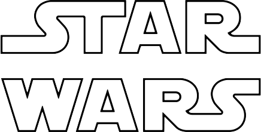

<mat-sidenav-container class="sidenav-container">
  <mat-sidenav #drawer class="sidenav"
      fixedInViewport="false"
      [attr.role]="(isHandset | async) ? 'dialog' : 'navigation'"
      [mode]="(isHandset | async) ? 'over' : 'side'"
      [opened]="(isHandset | async) === false">
    <mat-toolbar>Menu</mat-toolbar>
    <mat-nav-list>
      <a mat-list-item href="#">Link 1</a>
      <a mat-list-item href="#">Link 2</a>
      <a mat-list-item href="#">Link 3</a>
    </mat-nav-list>
  </mat-sidenav>
  <mat-sidenav-content>
    <mat-toolbar color="primary">
      <button
        type="button"
        aria-label="Toggle sidenav"
        mat-icon-button
        (click)="drawer.toggle()"
        *ngIf="isHandset | async">
        <mat-icon aria-label="Side nav toggle icon">menu</mat-icon>
      </button>
      <span></span>
      <span class="spacer"></span>
      <a class="nav-links" [routerLink]="['peoples']" [routerLinkActive]="['link-active']">Peoples</a>
      <a class="nav-links" [routerLink]="['ships']" [routerLinkActive]="['link-active']">Ships</a>
      <a class="nav-links" [routerLink]="['planets']" [routerLinkActive]="['link-active']">Planets</a>
    </mat-toolbar>
    <router-outlet></router-outlet>
  </mat-sidenav-content>
</mat-sidenav-container>


